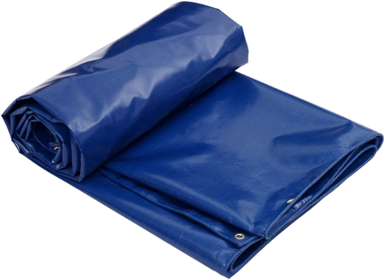
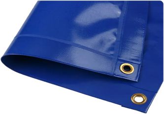
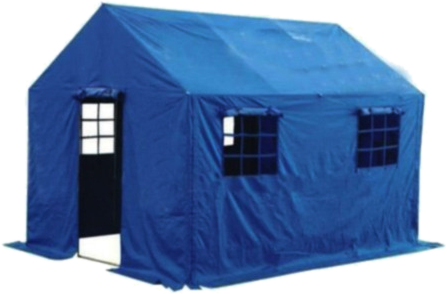

Double-side PVC-coated tarpaulin for heavy outdoor use: truck and cargo covers, construction, agriculture, events and shelters.

A Coimbatore-based export house supplying overseas buyers. We are the distributor and exporter of Purity PVC tarpaulin.
We handle your order end to end: specification, sampling, export packing, documentation and shipment from Indian ports. Grace Ferro exports to 16 countries across Europe, the Gulf, Asia, Africa and North America.
A strong base fabric sealed in PVC on both faces. The result is a heavy, waterproof sheet for covers that work outdoors all year.
Purity comes in five weights from 400 to 760 GSM. Buy it in 1.5 m × 50 m rolls to make your own covers, or as ready-made sheets in four standard sizes.
The base fabric carries the load. The PVC coating seals it from water, dirt and sunlight. Because both faces are coated, either side can face the weather.

The PVC coating forms a continuous seal, so goods, stock and equipment stay dry through monsoon rain.
UV stabilisers in the coating help the sheet resist fading and loss of strength in strong sun.
The base fabric copes with wind load, repeated folding, rough transport and installation.
Stays flexible in the cold and does not turn soft in summer heat. Generally rated from −30 °C to +70 °C.
The smooth coated surface wipes clean, which keeps a sheet in service for longer.
An FR version is available for warehouses, factories and other sensitive sites.
Truck covers, container covers and cargo protection on long hauls.
Site covers, temporary shelters and machinery protection in rain and dust.
Crop and hay covers, equipment shelter and livestock shade.
Outdoor shelters that protect guests and rented equipment.
Pitch and ground covers that keep playing surfaces usable.
Ridge tents and relief shelters.

Every grade is coated on both sides. A higher GSM means more fabric and PVC in each square metre, giving a heavier, tougher sheet for longer outdoor use. Lighter grades are easier to lift, fold and tie down.
| Material | |
|---|---|
| Construction | Base fabric with PVC coating on both sides |
| Coating | UV-stabilised PVC, smooth wipe-clean surface |
| Service temperature | Generally rated −30 °C to +70 °C |
| Fire retardant | FR version on request |
| Colour | Blue shown; ask for available colours |
Ask us for the manufacturer's datasheet for your grade. It covers the base fabric, thickness, tensile and tear strength, coating adhesion, available colours and, for the FR version, the fire test report.
Typical values; confirm with order. Weights per roll are nominal, calculated as GSM × area, and exclude packing.
| Grade | 400 | 430 | 550 | 650 | 760 |
|---|---|---|---|---|---|
| Roll weight | 30.0 kg | 32.3 kg | 41.3 kg | 48.8 kg | 57.0 kg |
| Nominal weight per sheet in kg, by GSM | |||||||
|---|---|---|---|---|---|---|---|
| Size (ft) | Size (m) | Area | 400 | 430 | 550 | 650 | 760 |
| 15′ × 12′ | 4.57 × 3.66 m | 16.7 m² (180 sq ft) | 6.7 | 7.2 | 9.2 | 10.9 | 12.7 |
| 18′ × 15′ | 5.49 × 4.57 m | 25.1 m² (270 sq ft) | 10.0 | 10.8 | 13.8 | 16.3 | 19.1 |
| 24′ × 18′ | 7.32 × 5.49 m | 40.1 m² (432 sq ft) | 16.1 | 17.3 | 22.1 | 26.1 | 30.5 |
| 30′ × 18′ | 9.14 × 5.49 m | 50.2 m² (540 sq ft) | 20.1 | 21.6 | 27.6 | 32.6 | 38.1 |
Nominal weights, calculated as GSM × area; they exclude hems and eyelets. Confirm finished sizes with your order.
Shown: a Purity sheet with a hemmed edge and metal eyelets for roping down.
When you enquire, tell us the eyelet spacing, hem finish and any size you need beyond the four standard sheets.
| Price | On request. We reply to quotation requests within 24 hours. |
|---|---|
| Incoterms | FOB or CIF, quoted per order. |
| Ports of loading | Chennai, Mumbai or Nhava Sheva; other Indian ports on request. |
| Payment | 30% advance, 70% against scanned B/L · D/P · D/A · LC (usance / UPAS). |
| MOQ & lead time | Quoted with each enquiry, by grade, form and quantity. |
| Samples | Available. The buyer pays the sample cost and courier. |
| Documents | Relevant certificates and export documents with each shipment. |